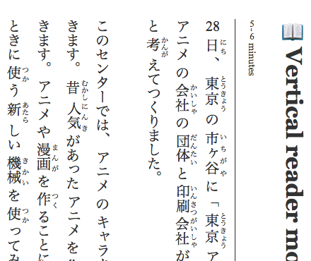
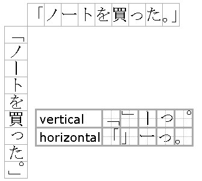

:first-letter
p::first-letter {
float: left;
font-size: 700%;
background: url(res/pic2.png);
color: white;
padding: 0.1em;
margin: 0 0.05em 0.05em 0;
border: outset 4px pink;
text-shadow: 1em 1em 2em rgba(255, 215, 0, 0.5), 0 0 1em rgba(255, 215, 0, 0.5), 0 0 0.2em rgba(255, 215, 0, 0.5), 1px 1px 0 #ecdc25, -1px -1px 0 #90582e, 1px -1px 0 #ecdc25, -1px 1px 0 #90582e, 3px 3px 5px #333;
}unicode-range
- Fonts without uppercase or tabular numerals
- Most commonly, Georgia: 1234567890
- Non-Latin fonts with ugly Latin letters
- Add custom emoji to a font
@font-face {
font-family: ComicNumerals;
src: local(Comic Sans MS), local(Chalkboard);
/* ASCII 0-9, A-Z */
unicode-range: U+30-39, U+41-5A;
}font-feature-settings
Toggles OpenType features in fonts
The i
font-variant-caps
Small Caps
Aa Bb Cc Dd Ee Ff
US nato asean 9am–17pm
font-variant-numeric
221/2 221⁄2 1984–2048 787
p { font-feature-settings: 'zero', 'tnum', 'lnum'; }
p { font-variant-numeric: slashed-zero tabular-nums lining-nums; }ordn
1st 2nd 3rd 4th 2st 3th 4dogs 5 cats
1st 2nd 3rd
font-feature-settings
Useful settings
ligaRequired LigatuersdligDiscretionary ligaturessmcpSmall CapscaltContextual AlternatesdligDiscretionary LigaturestnumTabular FigureszeroSlashed ZeroswshSwashfracFractionsordnOrdinals
When to use tabular figures
Use tabular and modern numbers for tables & labels
| 1811 est. | 353500.00 |
| 1900 est. | 21464.17 |
| 1986 est. | 617617.76 |
| 1816 est. | 353500.00 |
| 1906 est. | 21464.17 |
| 1986 est. | 617617.76 |
Proportional and old-style are best left in body text
RTL text
Vertical text

text-orientation
Emphasis in Asian scripts
*:lang(ja) emp {
text-emphasis-style: filled sesame;
}
*:lang(zh) emp {
text-emphasis-style: filled dot;
}
text-emphasis
text-combine-upright
Vertical numerals, aka tate-chu-yoko (縦ä¸æ¨ª)
Vertical punctuation

If the font supports it, setting the writing mode enables vertical punctuation
@media
- Different rules for different viewing devices
- Responsive design
Print CSS
@media print@pagepage-break-after,page-break-beforeorphans,widowssize
@media print
Apply selectors to your webpage in print
@page
Selectors for the printed page itself
@page { /* size: A4 landscape; */ }
/* cover */
@page:first { font-size: 192px; }
/* verso */
@page:left { margin: 5cm 10cm 5cm 5cm; }
/* recto */
@page:right { margin: 5cm 5cm 5cm 10cm; }position: sticky;
repeating-linear-gradient
background: repeating-linear-gradient(45deg,
transparent,
transparent 10px,
#E1002D 10px,
#E1002D 20px);filter
filterVery common (CSS)
<filter>
Not very common (SVG)
And quite advanced
feDistantLight
fePointLight
feSpotLight
feBlend
feColorMatrix
feComponentTransfer
feComposite
feConvolveMatrix
feDiffuseLighting
feDisplacementMap
feFlood
feGaussianBlur
feImage
feMerge
feMorphology
feOffset
feSpecularLighting
feTile
feTurbulence
feDisplacementMap
SVG filters can be applied to HTML
<filter>
<feImage
result="warp"
xlink:href="${displacementMap}"
/>
<feDisplacementMap
xChannelSelector="G"
yChannelSelector="R"
in="SourceGraphic"
in2="warp"
scale="400"
/>
</filter>feDisplacementMap
feDisplacementMap
<feImage result="warp"
xlink:href="${displacementMap}"
/>
<feDisplacementMap
xChannelSelector="G"
yChannelSelector="R"
...iframe
SVG rules
- Whole bunch of SVG-only CSS rules
clip-path
SVG also has a version of clip-path
clip-path: polygon
background-clip
p {
color: transparent;
background: -webkit-linear-gradient(top, black, white);
background-clip: text
}Call me Ishmael. Some years ago—never mind how long precisely—having little or no money in my purse, and nothing particular to interest me on shore, I thought I would sail about a little and see the watery part of the world. It is a way I have of driving off the spleen and regulating the circulation. 🔥
mask-image
SVG also has a version of mask-image
mask-image
::selection
Call me Ishmael. Some years ago—never mind how long precisely—having little or no money in my purse, and nothing particular to interest me on shore, I thought I would sail about a little and see the watery part of the world. It is a way I have of driving off the spleen and regulating the circulation.
contain and cover
#bg { background-size: cover; }
#img1 { object-fit: cover; }
#img2 { object-fit: contain; }
#img3 { object-fit: unset; }CSS 3D transforms
- Somewhat common but still cool!
scroll-behaviour
overscroll-behavior
Disable native overscroll behavior
Chrome article on overscroll-behavior
Every rule is a good rule
These rules are already in your toolbox